Installing Feeders
The FTP PCB has two different types of components that need to be placed: resistors and LEDs. Each will need its own feeder so that the LumenPnP can pick each type of component. For this guide, you'll use printed tray feeders.
Attach Feeders
-
Use two M3x10 button head screws and two M3 wingnuts to secure the printed tray feeder through onto the staging plate using holes: C15 and E15. 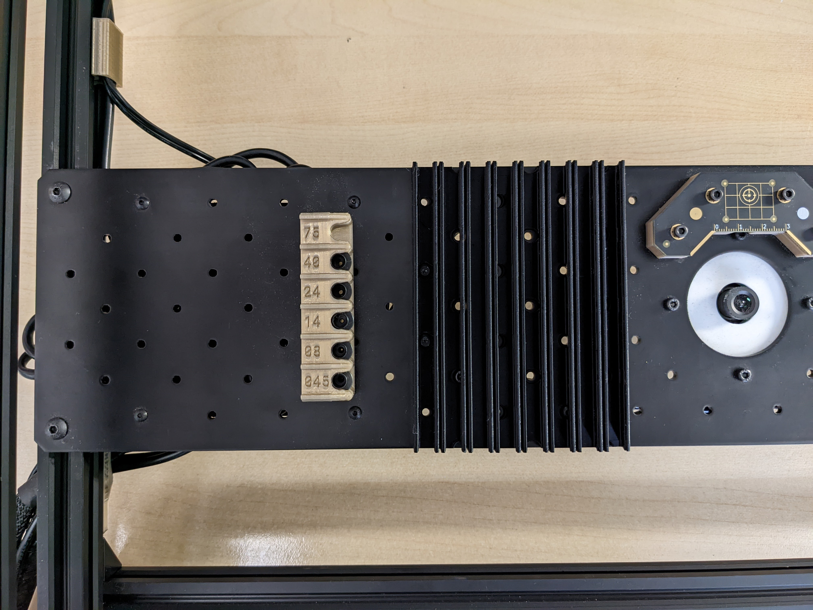
-
For each component, cut a strip of component tape off the reel about 125mm long.
-
Slide the Resistors into the left-most tray feeder, and the LEDs the adjacent tray.
-
In OpenPnP, connect to your LumenPnP and home it.

Import Board
-
Download the FTP board design. It's in the
LumenPnP_PCBs.zipartifact on the latest major release. -
Navigate to the
Jobtab in the top right.
-
Click that "Add" Icon button to add a new board and select
New Board. Save the board in the same directory as the job. 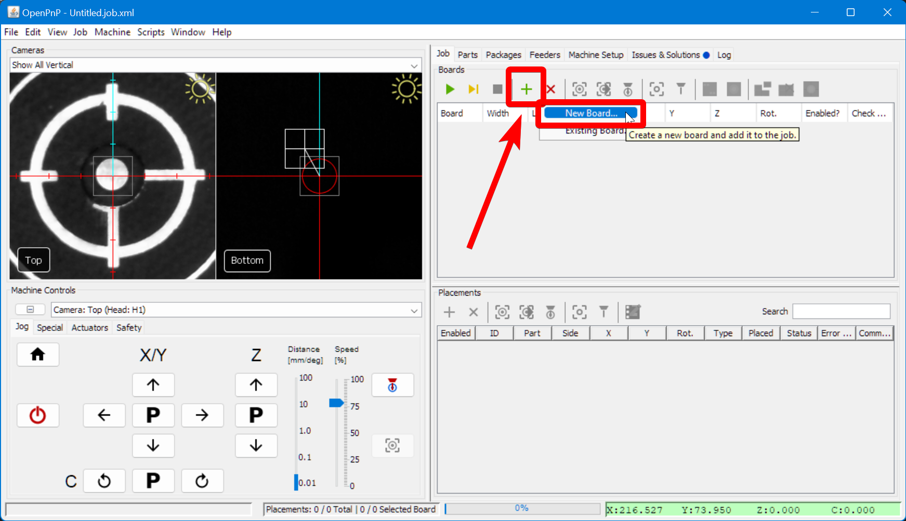 -
Click on the newly-created board in the list to select it.

-
Go to
File > Import Board > KiCAD .pos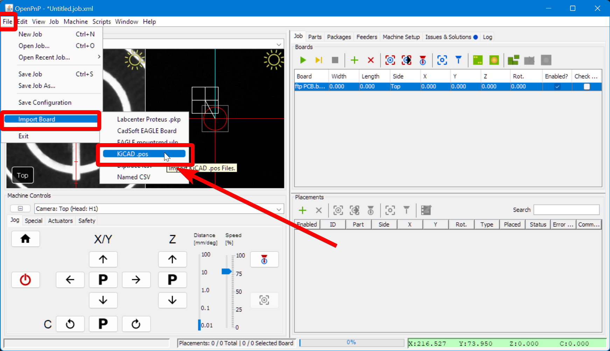 -
In the Import popup:
- Select the
ftp-top.posfile you downloaded earlier as the Top File - Enable the
Assign Partscheckbox. - Enable the
Create Missing Partscheckbox. - Click
Import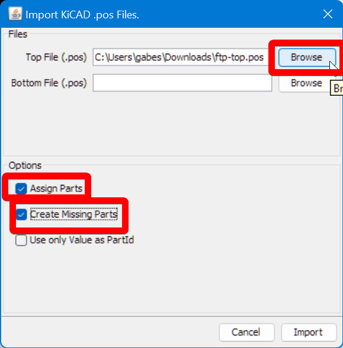
- Select the
-
Go to
File > Save Job Asand save your FTP job.
Add Feeders
-
Navigate to the
Feederstab in the top-right pane.
-
Click on the "Add Feeder" icon button.

-
Select
ReferenceTrayFeederand clickAccept.
-
In the lower-right panel, you'll be in the
Configurationtab. Change thePartto beR_0603_1608Metric-R_Small.
-
Set the
YOffsetto-4. This is the space between components on the tape.
-
Set the
YTray Countto30. This is the number of components available on the feeder before it needs to be manually moved forward.
-
Set the Pick location to:
X=45,Y=175,Z=20as a starting point. 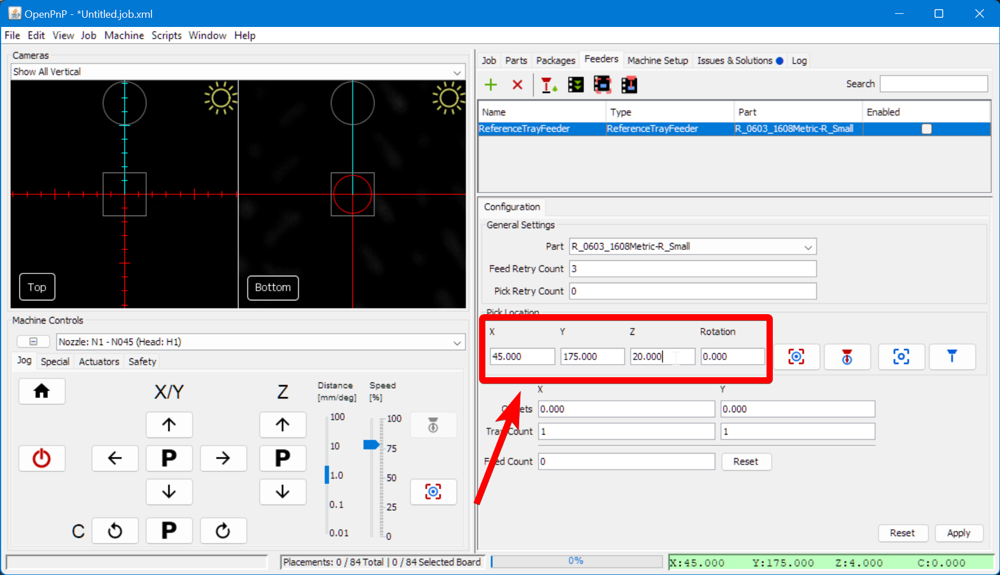 -
Click on the "Position Camera" icon button to move the top camera roughly over the left feeder.

-
Position the center of the top camera feed over the center of the top-most slot holding a resistor in the tray. You can drag the reticle in the camera feed, or use the jog buttons.

-
Zoom in on the camera feed and precisely position the center of the reticle over the center of the slot holding the resistor. The resistor itself may not be perfectly centered, that is fine.

-
Click the "Capture Camera Location" icon button to save the XY position of the start of the feeder.

-
Click
Applyto save the feeder settings
-
Click the
Enablecheckbox in the feeder list.
-
Do the same procedure again for the LED feeder. You'll assign the part
LED_0603_1608Metric-LED_Smallto the new feeder.
Installing the N045 Nozzle
- Grease the nozzle holder before installing the N045 nozzle.

- Install your N045 nozzle onto the nozzle holder.

- Wipe off any excess grease. 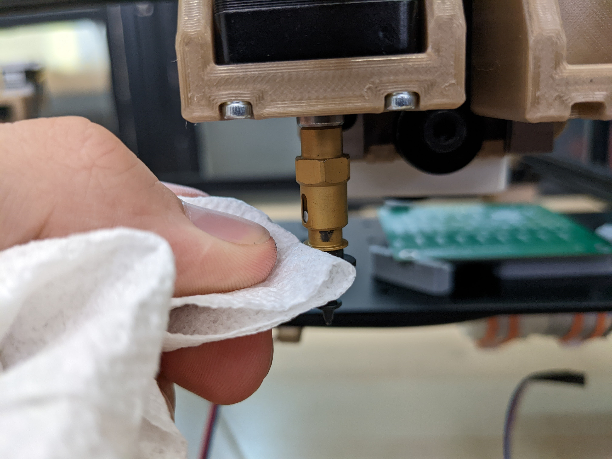
-
Go to the
Machine Setuptab in OpenPnP. 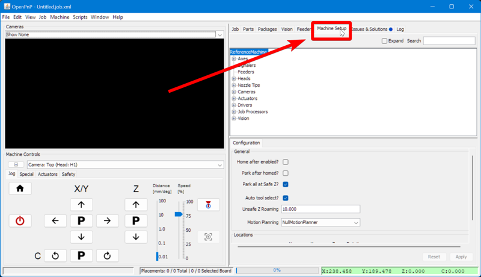 -
Navigate to
Heads > ReferenceHead H1 > Nozzles > ReferenceNozzle N1. 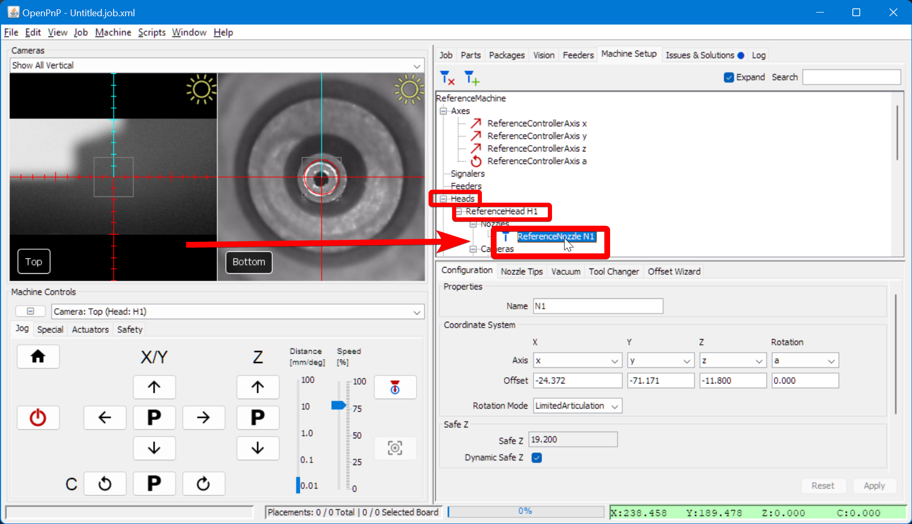 -
In the lower-right pane, switch to the
Nozzle Tipstab.
-
For row
N045, check both theCompatibleandLoadedcheckboxes. If you haven't set up automatic nozzle changing, you will receive a popup saying that you're required to manually load the nozzle on the toolhead.
-
Go to the
Packagestab in the top-right pane.
-
Select
LED_0603_1608Metricfrom the list.
-
In the lower-right pane, you'll be in the
Nozzle Tipstab. Click theCompatibleon theN045row. 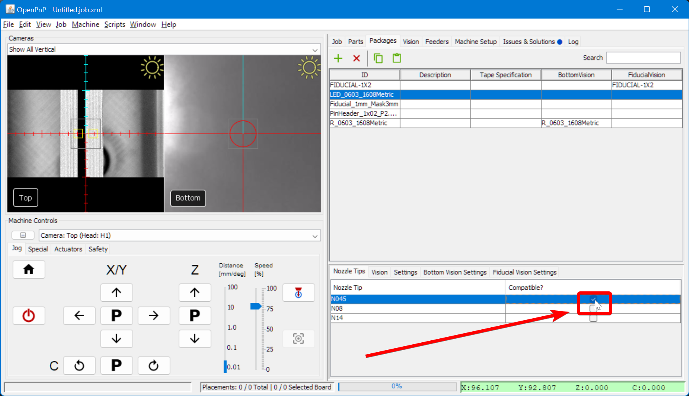 - Similarly, select
R_0603_1608Metricfrom the Package list. 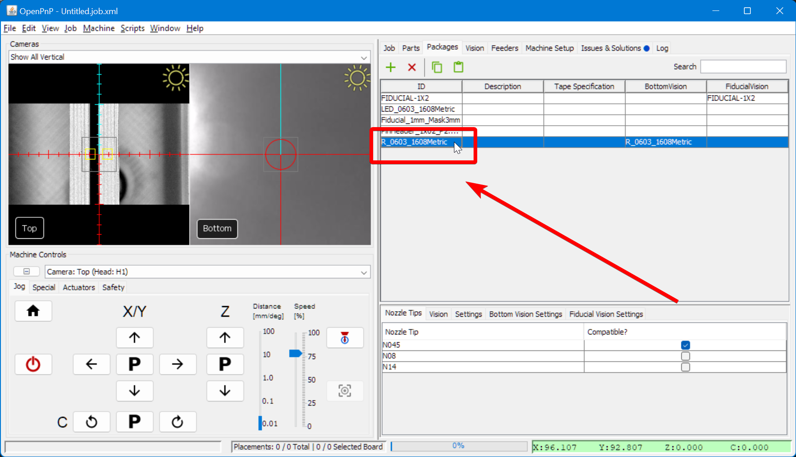 - And click the
Compatiblecheckbox on theN045row.
- Under the bottom-left
Machine Controlspane, selectNozzle: N1 - N045 (Head:H1)to enable the left toolhead.
Fine-tuning feeder height
-
Navigate to the
Feederstab in the top-right pane. -
Click on the "Position Nozzle" icon button to bring the nozzle over the feeder.

-
Use the Jog controls to lower the Z axis until the nozzle is touching the surface of the plastic tape cover. 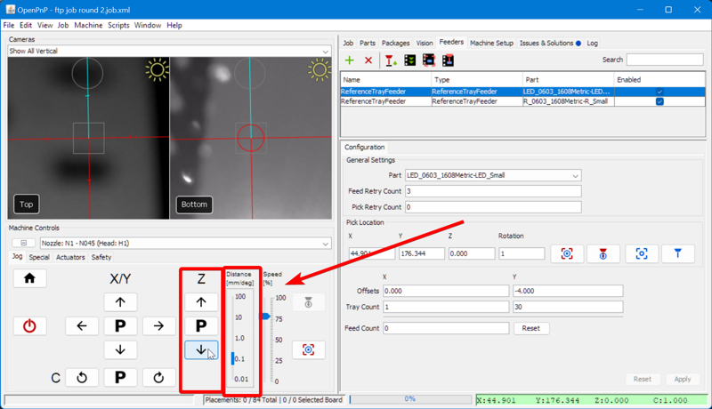


-
Click on the "Capture Nozzle" icon button to save the new Z height of the feeder.

-
Jog the XY gantry away from the feeder. 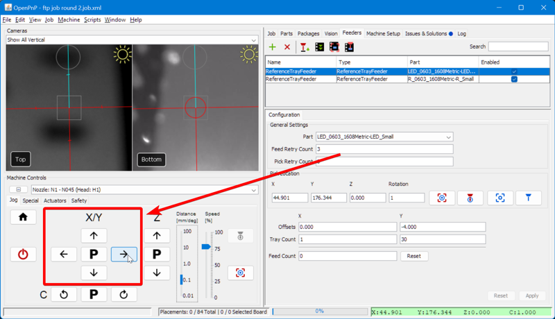
-
Remove the tape cover from the feeder.
-
Click the "Pick" icon button to pick a component from the feeder. If the component is picked up properly, your Z-height is correct. If not, you should: 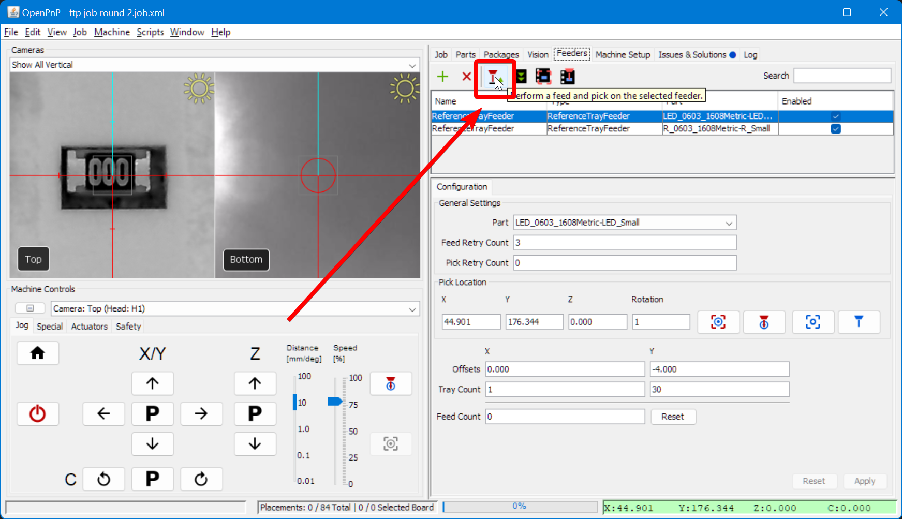
- Lower the Z height of the feeder by
0.1mm - Press Apply to save the change
- Home the machine
- Try picking a component from the feeder again.
- Lower the Z height of the feeder by
-
After you've successfully picked a component, in the machine
Machine Controlspane, switch to theSpecialTab.
-
Recycle the component you've successfully picked up 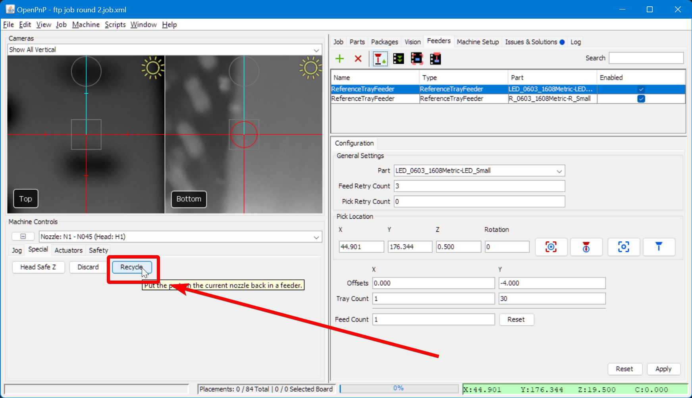
-
Copy the final Z height, select the other feeder, paste it for the other feeder, and press
Apply
-
Test picking a component from the other feeder
Next Steps
Next is setting up the board.